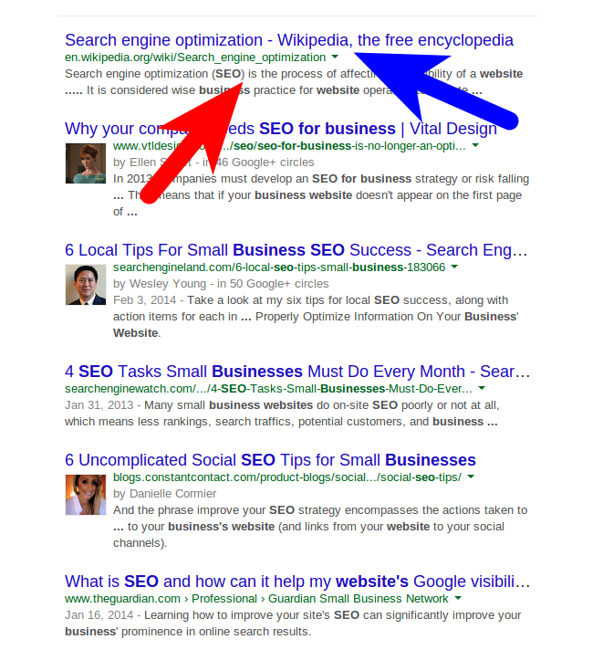

Look Great on Mobile, Tablet & Desktop
Your website will look great on all screen sizes - desktop, laptop, iPad, iPhone and Android devices. Resize this browser window to see how the template responds.

Search engines (like Google, Yahoo! and Bing) are basically robots that read every website on the internet, creating an index based on what they read.
When a user searches for a term in Google, the search engine goes through the index that it created when it last crawled the web.
Google then displays the search results that it thinks are most relevant for the user, based on the search terms they used.
The order in which Google displays results is based on the popularity of the various sites, keyword density, and other factors - so the user sees a list of sites that the search engine believes are most relevant, ranked accordingly.
The words used on your site also help your users to decide whether or not your content is relevant to them.
Aligning content with the terms that people use when searching is crucial. The following video by Google Analytics takes a tongue-in-cheek look at this.
As explained by Matt Cutts of Google.
The word-cloud on the right shows the word density on the page 'Best practice in water' from the ICE website.
This page was found using the search term "Best practice water engineering" in a Google "incognito" search.
How would a search engine interpret this content? Would it consider the web-page to be about "Document", or "Type"?
Including the right keywords in your content doesn't just help you to rank well in search engines - it helps users determine whether or not to click through and look at your content.
Click here for more info on this page
Note that this page is generated dynamically by the ICE website, and it includes articles which have been tagged with the term "water". It appears that a number of articles have been tagged inappropriately, which "dilutes" the keywords on the landing page.
Finding the right keywords is not enough - SEO strategy needs to be integrated throughout your digital presence.
An effective search engine optimisation (SEO) strategy requires:
Above all else, you should create rich, useful content that naturally incorporates the keywords that potential visitors actually search for.
The user workflow typically involves:
The language you use in your content may not align with the words your potential users enter into search engines.
Determine the words that people use when searching for related content - include these words in your content.
Although it is important to align your content with the terms that people use during search, you shouldn't focus on stuffing content with keywords.
Indeed, this practice is frowned upon by Google, and may cause your content to lose search rank.
Focus on good quality content that is useful for your visitors - but include search keywords in a natural way.
Search engines use a range of signals to decide on how to rank a site for a particular search term. These signals are usually secret - to prevent "gaming" of search engines.
Google have stated that they use more than 200 signals. Probably the most important determinant of search prominence is the number of backlinks to your site.
Click the button below for more detailed information on search ranking.
Click here for more info on search ranking
According to Google, site owners should:
"Create a useful, information-rich site, and write pages that clearly
and accurately describe your content."
Google Webmaster Guidelines, accessed 13 March 2014
This short video by the Google webmasters team explains the basics of a great website in less than two minutes. The take home message? Focus on users - not search engines.
A high level overview of the searcher persona workflow, and how to align website execution with the needs of users.
Some clear SEO advice from Google, focused on best practice.
Google advise to focus on how people already arrive at your site - and to make popular content more prominent. Don't focus on ranking for "cherry" keywords - SEO should be more holistic.
Clear guidelines on "content-scraping" and the impact it has on search ranking. In short, if your site shows external content, you must add significant value to the content.
Title tags and meta-descriptions are the titles and descriptions that are displayed on search engine results pages.
These pieces of information are often the first experience that users have of your online content.
Title tags and meta descriptions should include relevant keywords, and be easily understood by your users. In addition, these elements are used by search engines to determine what a web page is about.
People are more likely to click on a particular result if there is a compelling title & description on the search engine result page.
Titles should be no longer than 70 characters, and descriptions no longer than 150 characters - if they exceed these values, search engines will truncate them.
This image highlights the title tag with a blue arrow and the meta description with a red arrow
Note that in the image above some of the results have author images. It is likely that Google ranks pages higher when authorship of the page has been verified. This trend has been evident for a while, and it looks like it will become more important.
"Within search results, information tied to verified online profiles will be ranked higher than content without such verification, which will result in most users naturally clicking on the top (verified) results. The true cost of remaining anonymous, then, might be irrelevance.”Eric Schmidt, Executive Chairman, Google (2013)
In other words, it is likely that content created by verified authors will rank higher in search engine results pages - making content more discoverable and increasing the potential audience. In addition, being active in social networks will probably improve search engine ranking for an author. Because of this, content-creators should probably undergo Google authorship verification.
Having Google authorship makes a site listing in a search engine results page stand out. It also adds a human element to content - which is attributed to an actual person, with a link to that person’s Google+ page. Google authorship allows an individual's online work to be linked and in all likelihood makes it easier to become established as an expert in the eyes of search engines.
Click the button to access the Google Adwords account that we have set up for this workshop. This will open in a new browser tab.
Google AdwordsYour website will look great on all screen sizes - desktop, laptop, iPad, iPhone and Android devices. Resize this browser window to see how the template responds.